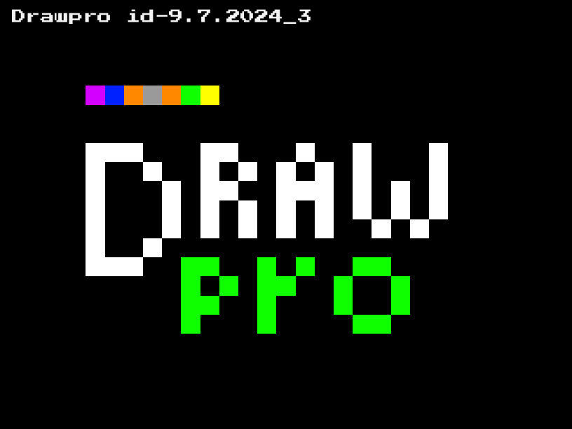

Changelog
id-9.7.2024_3 / indev version 3 Changes in this version:
- Added Image Saving (view mode only)
- Fixed Blank Grids on Null Save Data load
- Saved! Text no longer visible during view mode
- Added Backups (saved before clearing : kinda like an undo keybind)
- Added Restoration Pixels (pixels restored after some sort of save load or something, when the given pixels drawn are Null Save Data)
- Changed Saved Text based on what is being saved
- Added ability to Change Selection based on mouse (have to click it down btw)
Changes in this version:
- Added Save Loading
- Changed “UI” layout
- Moved Save Text
- Fixed Autosaving
- Fixed Save Text Visibility issue
- You can no long go out boundaries
- Added Color Selection
- Added File saving and loading
- Added “custom” file extension for drawpro doodle files
- Changed grid to 15x15(fits the colors)
There are no changes lol This was the first version!!